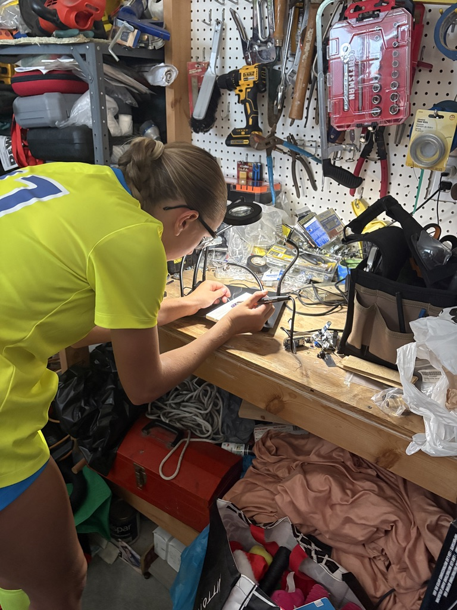
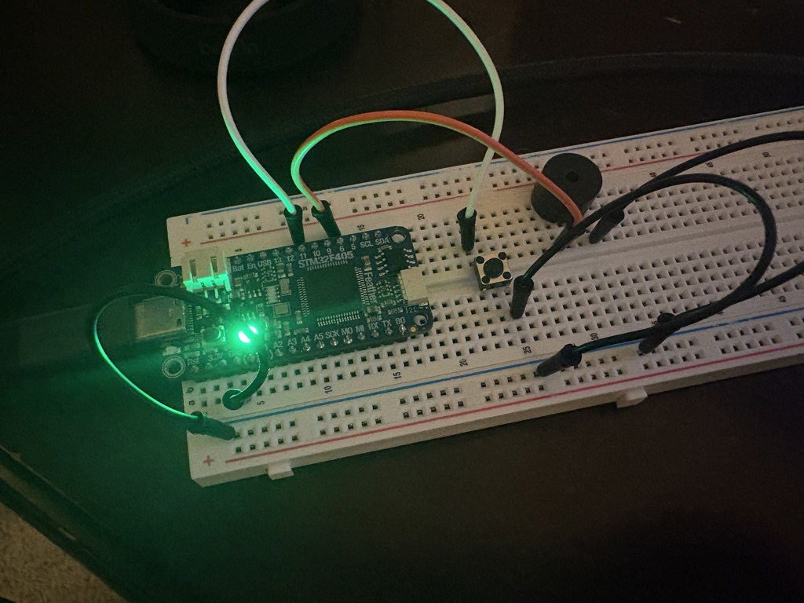

1. Breadboard prototyping
I used my STM32f405 Feather microcontroller to prototype the device on a breadboard. It has 8 tones to switch between using a button and a timer to play the sounds intermittently.
Starter Project
A reverse-engineering project to prototype and redesign a prank noisemaker device.
I got this device on amazon to prank my friends with. It was a simple little device, but I wanted to see if I could tear it down and rebuild it myself.

I developed my version of the noisemaker device in three steps:
I used my STM32f405 Feather microcontroller to prototype the device on a breadboard. It has 8 tones to switch between using a button and a timer to play the sounds intermittently.
I used KiCAD to design the schematic. I found parts on Digikey that matched my needs and imoported them into a KiCAD library.
I design the PCB layout in KiCAD. I used a 2-layer design with a ground plane on the bottom layer. I also added a silkscreen layer to label the components and make it easier to assemble.
Soldering
My sister was nice enough to help me solder the connections onto the board.

Breadboard Protoyping
I wired my board with a button and speaker to test my code. I also utilized the onboard multicolor LED
I used PWM audio to generate the tones and the button to switch between them. I also used the onboard multicolor LED to indicate which tone was currently selected. All of this software was coded on STM32CubeIDE and flashed onto the board using STM32CubeProgrammer.

Schematic Design
I chose my PIC by considering the requirements of the project and choosing a microcontroller that met those requirements. I the chose additional components using AI suggestions. I downloaded all the footprints and symbols off of Digikey and imported them to a KiCAD library.
The PIC I chose was the PIC12F1840 for its low-power capabilities and small footprint. I also added a way to program the board with a six-pin header.